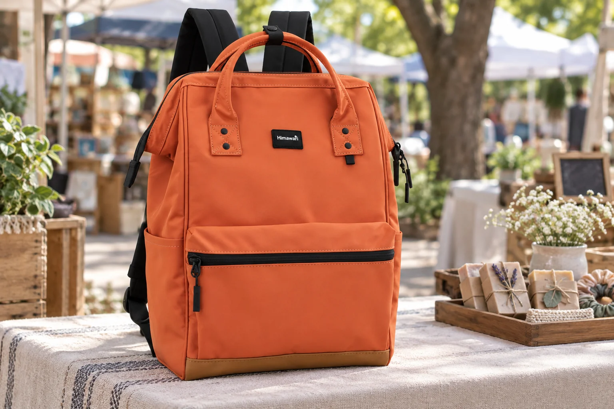

동네 플리마켓 판매자 가방: 진열대와 백팩의 역할 나누기

동네 플리마켓에 참여하면 집에서 가져온 물건이 한꺼번에 테이블 위로 올라갑니다. 판매할 것과 내 지갑, 휴대전화, 행사 안내까지 한 가방에 섞어 오면 진열을 마친 뒤에도 필요한 종이 한 장을 찾기 어렵습니다. 주최 측이 알려준 자리 크기와 반입 규정을 먼저 확인하고, 백팩은 상품 보관함이 아니라 하루 동안 곁에 둘 개인 물건의 자리로 정해보세요. 마감할 때 되가져올 물건의 자리를 비워두는 것도 중요합니다.
행사 안내에서 제공되는 것부터 확인합니다
부스 크기, 테이블 제공 여부, 입장·철수 시각과 포장재 처리 규칙을 주최 측 공지로 확인하세요. 제공되는 비품과 직접 챙길 물건이 달라지면 운반할 짐의 양도 달라집니다. 판매 물건은 진열과 운반에 맞는 별도 상자나 가방에 정리하고, 백팩에는 신분 확인에 필요한 물건과 개인 소지품, 당일 바로 꺼낼 안내만 남깁니다. 날씨가 바뀔 수 있는 야외 행사라면 덮개나 비닐 사용이 허용되는지도 먼저 살펴보세요.
진열할 물건과 손에 둘 물건은 나눕니다
가격표나 상품 설명 카드, 포장할 봉투는 판매대에서 사용할 묶음으로 만듭니다. 내 열쇠와 교통카드, 휴대전화는 그 묶음과 섞지 않고 몸 가까이 관리할 수 있는 자리에 둡니다. 종이 안내가 젖거나 구겨지지 않도록 얇은 파일을 사용할 수 있습니다. 백팩 안의 물건을 찾으려고 진열품 위에 가방을 펼치지 않아도 되게, 개장 전 실제로 필요한 것을 한 번 꺼내보세요. 사진의 진열 소품은 가방 구성품이 아닙니다.
운영 중에는 백팩이 통로에 나오지 않게
사람이 오가고 물건을 집어 보는 동안 가방을 테이블 앞 통로나 다른 판매자의 공간에 두지 마세요. 주최 측이 안내한 보관 위치가 있다면 그곳을 따르고, 개인 물건은 자리를 비우기 전 확인합니다. 현금이나 결제 관련 물건을 쓰는 경우에는 현장 운영 방식에 맞춰 별도로 관리하고 백팩을 공개 진열 공간의 임시 수납함처럼 사용하지 않는 편이 좋습니다. 판매 물건을 보충할 때도 진열품과 내 소지품이 바뀌지 않도록 두 묶음을 유지하세요.
마감 전에 남은 수량과 개인 짐을 따로 셉니다
철수할 때는 진열된 물건, 보관해 둔 예비 물건, 포장재를 먼저 각각 모읍니다. 판매한 수량과 남은 수량을 대조할 수 있다면 빠뜨린 물건을 찾기 쉬워집니다. 백팩에서는 개인 소지품과 안내문만 확인하고 판매 물건을 급히 밀어 넣지 마세요. 뾰족하거나 깨지기 쉬운 소품은 행사 규칙에 맞는 별도 포장으로 옮깁니다. 주변에 떨어진 쓰레기와 빌린 비품을 확인한 뒤, 주최 측의 퇴장 동선에 따라 자리를 정리합니다.
집에 오면 다음 행사 짐과 평소 짐을 분리합니다
귀가 후 백팩에 들어간 임시 종이와 포장재를 꺼내고, 평소 쓰는 열쇠와 지갑의 자리를 되돌립니다. 판매용 물건이 백팩 안에 남았다면 따로 보관해 다음 행사 목록에 반영하세요. 야외에서 흙이나 먼지가 묻었다면 가방의 관리 표시를 확인하고 부드럽게 털어냅니다. 대표 사진은 실제 Himawari No.124 오렌지 제품을 참조한 플리마켓 AI 연출이며, 판매대와 소품은 제품 구성이나 행사 참여 사례를 나타내지 않습니다.
참고·안내
- Himawari No.124 제품 정보
- 실제 Himawari No.124 오렌지 원본 사진을 참조한 AI 연출 이미지입니다. 플리마켓의 판매대와 소품은 연출이며 제품 구성품이나 실제 판매 사례가 아닙니다.
자주 묻는 질문
판매 물건도 백팩에 함께 넣어 가면 되나요?
진열·포장이 필요한 물건은 별도로 묶고, 백팩에는 개인 소지품과 당일 바로 꺼낼 운영 물건을 남기면 구분하기 쉽습니다.
마감 때 무엇을 먼저 확인하면 좋나요?
진열품·예비 물건·빌린 비품을 나눠 확인하고, 마지막에 개인 소지품이 든 백팩을 다시 점검하세요.